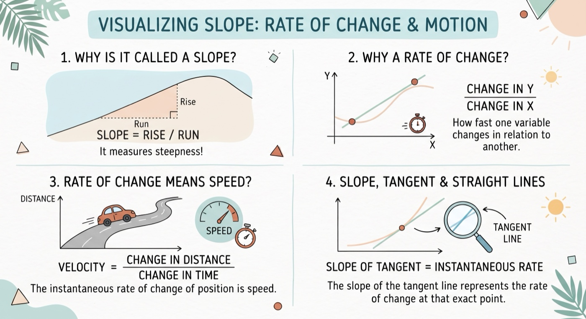
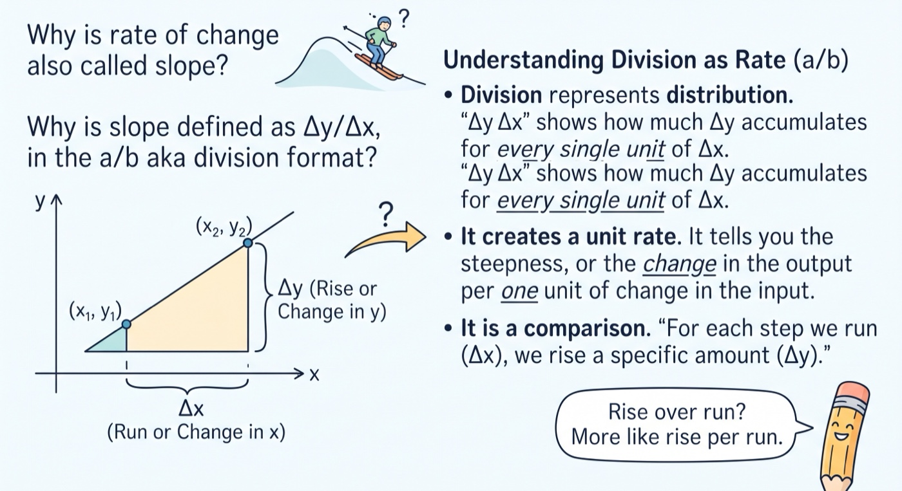
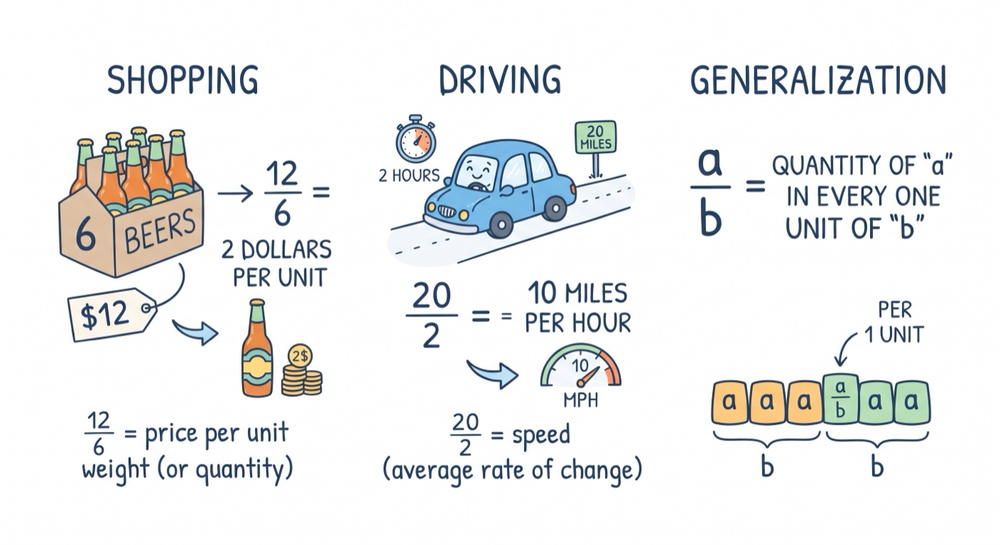
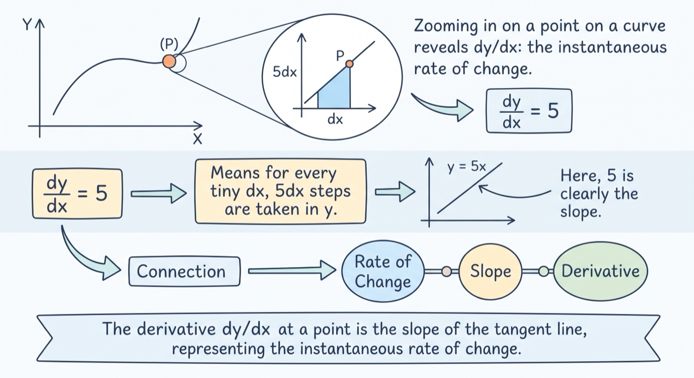

What is Slop in Derivative | Sailin' N Voyages Series, Ep. 6
What is Slop in Derivative
1 This video answers the question - what is slope - to some extent and clarity. Why is it called a slope? Why is it a rate of change? Why rate of change means speed in motion? And the connection between slope, tangent and a straight line.
2 Why is rate of change also called slope? Why is slope defined as Δy/Δx, in the a/b aka division format?
3 Normally we just call it a division, but it can mean a few things: In the context of shopping, if it costs 12 dollars for 6 beers, then 12/6 means price per kilo, or quantity of dollar per every one single unit of weight. In the context of driving, if 20 miles is covered in 2 hours, then 20/2 means miles per hour, which is speed - the average rate of change of distance. Therefore a/b can be generalized as quantity of a in every one unit of b.
4 When we zoom in to a point on a curve to calculate derivative, we can see dy/dx, which is the instance rate of change at that point. If dy/dx = 5, then it means for every tiny step dx you step in x, 5dx steps will be taken in y. If we write dy/dx=5 in the format of a straight line equation, then it’s y=5x - and no one would have questioned what 5 means on a straight line - it means slope. Now we can see the connection between slope, rate of change, and why it’s called a slope.